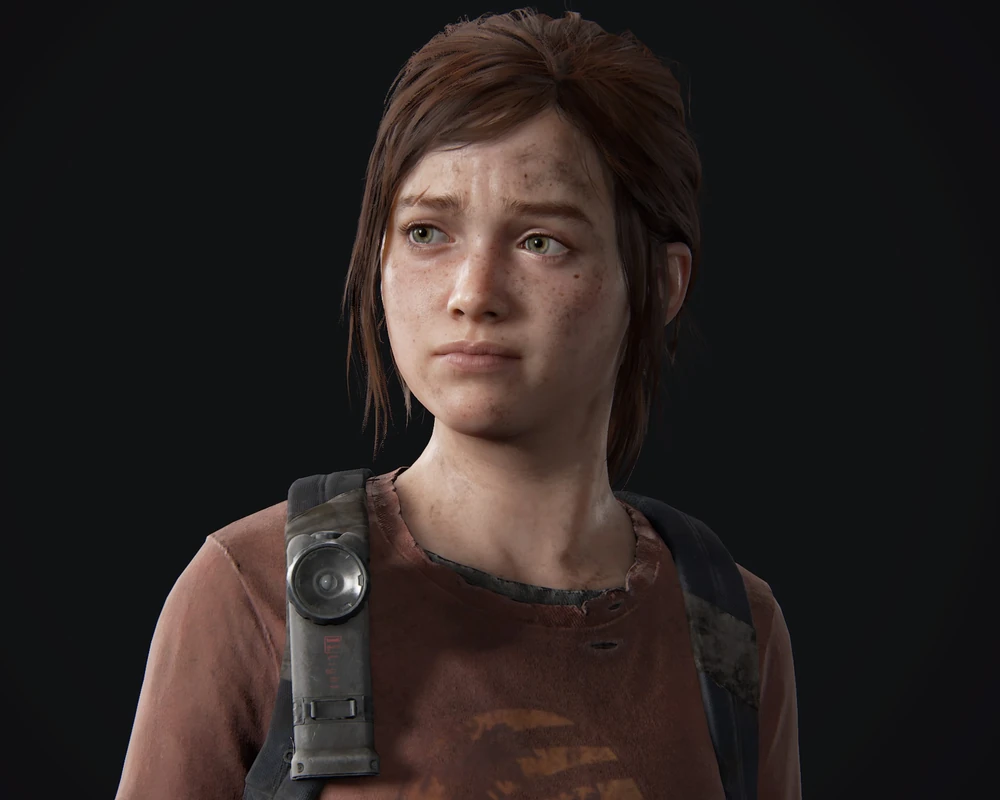

Sobre o jogo
Conheça a história emocionante e os personagens inesquecíveis de The Last of Us, vencedor de mais de 200 prêmios de Jogo do Ano.
Em uma civilização devastada, em que infectados e sobreviventes veteranos estão à solta, Joel, um protagonista abatido, é contratado para tirar uma garota de 14 anos, Ellie, de uma zona de quarentena militar. No entanto, o que começa como um pequeno serviço se transforma em uma jornada brutal através do país.
Inclui a campanha de The Last of Us e o aclamado capítulo anterior à trama, Left Behind, que explora os eventos que mudaram para sempre as vidas de Ellie e sua melhor amiga, Riley.
Para mais informações, acesse playstation.com.
Personagens
Joel Miller

Joel é um sobrevivente na América pós-apocalíptica que foi devastada pela infecção cerebral pelo vírus Cordyceps. Tornou-se um contrabandista cruel e cínico, eventualmente encarregado de contrabandear e proteger Ellie Williams.
Ellie Williams
Ellie é uma garota de 14 anos que frequentou uma escola militar preparatória, onde conheceu e fez amizade com Riley Abel. Após eventos, Ellie conhece Joel Miller, um contrabandista, encaminhado de escoltá-la para fora da zona de quarentena.
Tess Servopoulos
Tess é uma contrabandista em Boston na zona de quarentena. Lá, ela conhece Joel. Joel servindo como músculo enquanto ela era o cérebro em suas operações. Os dois formam uma aliança, confiando fortemente um no outro neste mundo pós-pandêmico.
Contato
Entre em contato
Me acompanhe
Venha até mim
Rua dos Vagalumes nº 123, Vila Serafitas - São Paulo - SP